Behavior Analysis Tool - Mystic¶
The Behavior Analysis Tool can be used to visualize the execution of Advanced Behavior Trees and Finite State Machines in Mystic. The Behavior Analysis Tool view can be launched in the View menu.
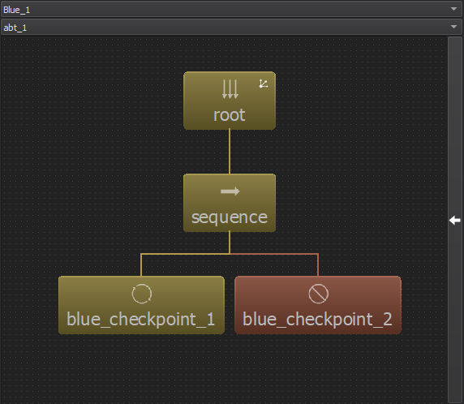
Note
The Behavior Analysis Tool does not work works with legacy Behavior Trees.
Controls¶
The view may be panned using the left mouse button and zoomed in and out using the mouse wheel. Objects may be dragged and reorganized using the left mouse button. ABT nodes may be selected to show Blackboard data by left clicking them and opening the blackboard tab on the right.
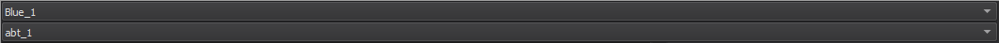
The combo boxes at the top of the view are used to change which platform and which ABT or FSM from that platform is currently displayed.
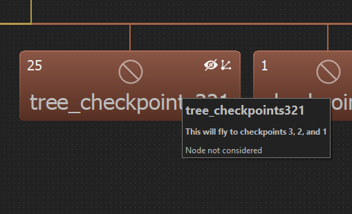
Extra icons may be displayed inside of an ABT node or FSM state. For ABT nodes, a crossed out eye is shown when a node’s children are hidden, and a tree symbol is shown if a node is a tree in script. For FSM states, a tree symbol is shown if the state has a child ABT, and a FSM symbol is shown if the state has a child FSM.
Mousing over any given object will show its tooltip. For ABT nodes, this will display the description given to the node in script if available as well as any tooltip text returned during any given execution state. For FSMs, this will display the names of any child ABTs or FSMs.
ABT Identifiers¶
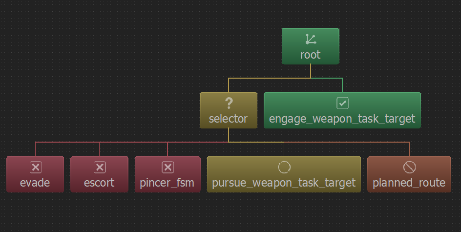
Node types may be identified with their accompanying symbols or text:
Node |
Example |
Description |
|---|---|---|
Root |
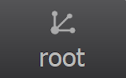 |
Designated by a dot branching into more dots. There is exactly one root node in every behavior tree, and it is always the base of the tree. |
Selector |
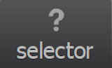 |
Designated by a question mark. This node runs each child node underneath it in order from left to right, stopping on the first success. |
Sequence |
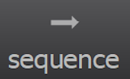 |
Designated by a large arrow to the right. This node runs each child node underneath it in order from left to right, stopping on the first failure. |
Parallel |
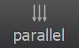 |
Designated by three arrows pointing downwards. This node runs all of its children at the same time. |
Action/Task |
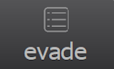 |
Designated by a checkbox list. These nodes execute the script that they were defined with. |
Memory |
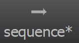 |
Designated by the ‘*’ after the name (Only used with Sequence/Selector). These nodes avoid unnecessary execution of their children, by storing execution state in memory. |
Note: There are other node types that do not yet have unique identifiers/symbols (other than their name). These node types default to the Action/Task symbolism. See other node types here.
ABT Node States¶
Nodes may have one of 6 States:
State |
Example |
Description |
|---|---|---|
Idle |
The node has not been run yet. |
|
Running |
The node is currently in the process of running. |
|
Failure |
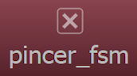 |
The node failed either its precondition or its execute block. |
Success |
The node has passed its precondition and its execute block. |
|
Halted |
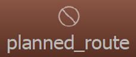 |
The node has halted due to its parent finishing running. |
Disabled |
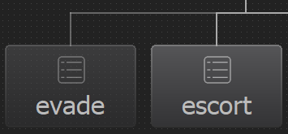 |
The node has been turned off in script, and will not be executed or considered. |
Blackboard¶
The Blackboard is used in conjunction with ABTs. The tab can be opened and closed by clicking the arrow button on the right side of the BAT view. The number of blackboard variables for a node are shown in its top left corner if it has any.
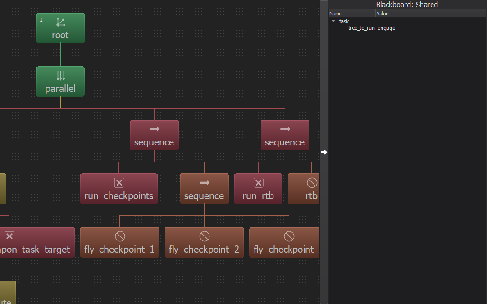
By default, shared blackboard data will be shown. To select a node and view its blackboard data, left click on it. To deselect the node, either click it again or click in the free space.
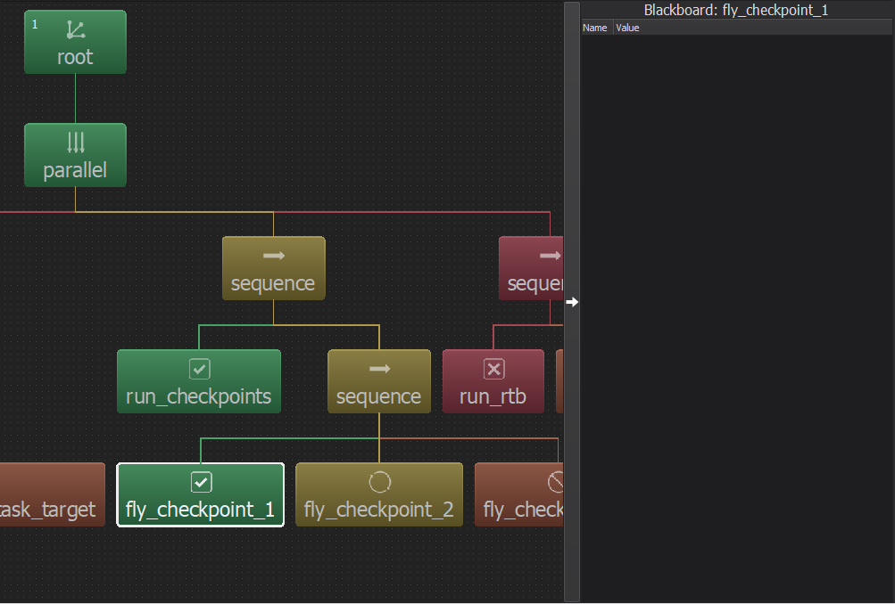
FSM Identifiers and States¶
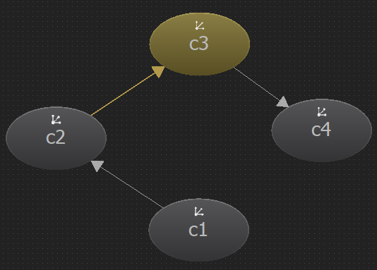
FSMs are comprised of multiple states along with transitions to other states. These transitions are indicated by a line and arrow pointing to the state being transitioned to. States may be either Idle (gray) or Active/Running (yellow), and any accompanying transition lines may light up yellow as well. An example are shown in the table below:
Current FSM State |
Image |
Explanation |
|---|---|---|
State is Idle |
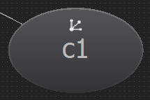 |
The state is idle and not executing. |
State is Active |
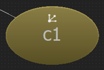 |
The state is active and is executing. |
State has Transitioned |
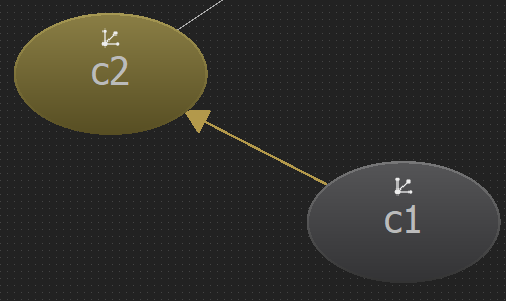 |
The state has transitioned to another state. Note the arrow showing where the state transitioned. |
State is Active |
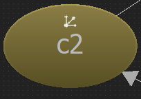 |
The transition is no longer highlighted as the new state has executed and transitioned to itself. |